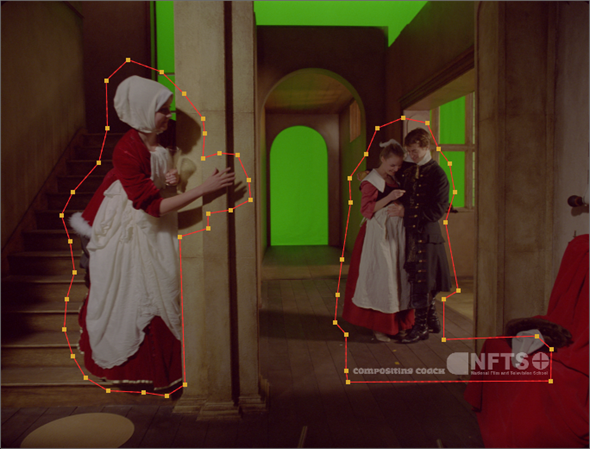

跟踪在场景的固定刚性部分上效果最好，因此每个轨迹都可以创建一个固定的 3D 点。求解器使用这些 3D 点来计算相机路径。移动元素和刻录在世界上没有固定的 3D 点，在跟踪之前应该隐藏起来。
要屏蔽序列的区域，请在 面具 用于定义不应跟踪的图像区域的输入。您也可以使用源输入的 alpha 通道作为遮罩。
| 1。 | 如果要使用单独的遮罩，请将 Roto 节点连接到 CameraTracker 面具 输入。 |
| 2. | 磨砂通过序列和关键帧的旋转形状来覆盖你不想跟踪的区域。 |
你不必对面具太精确，它只是为了覆盖可能导致摄影师问题的区域。例如，在所示的图像中，演员和版权烧录被蒙面。

| 3. | 在 “属性” 面板中，设置 面具 到要用作遮罩的组件: |
• 没有 -在整个镜头的轨道功能。
• 源 阿尔法 -使用源剪辑的 alpha 通道来定义要忽略的区域。
• 源 倒置 阿尔法 -使用源剪辑的倒置 alpha 通道来定义要忽略的区域。
• 面具 亮度 -使用遮罩输入的亮度来定义要忽略的区域。
• 掩模倒置亮度 -使用遮罩输入的倒置亮度来定义要忽略的区域。
• 面具 阿尔法 -使用遮罩输入 alpha 通道来定义要忽略的区域。
• 面具 倒置 阿尔法 -使用反向屏蔽输入 alpha 通道来定义要忽略的区域。
| 4. | 使用自动分析正常跟踪 轨道 按钮。请参阅 在序列模式下跟踪 . |
注意: 手动跟踪时不需要遮罩图像区域-您可以指定用户轨迹的放置位置。
|
|